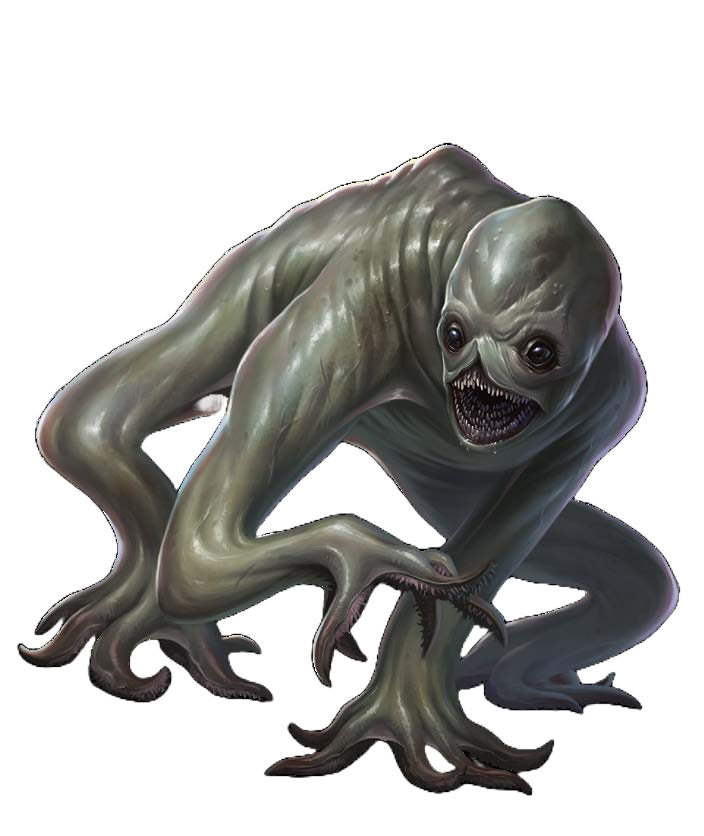

Aboleth
Aboleths are considered one of the earliest evils of Eberron. Born at the dawn of time from the progenitor dragon Khyber, the aboleths once followed their Overlords, what they call the Elder Evils, in enslaving the world. Since the Age of Demons came to an end when the dragons and couatls joined forces to defeat the Overlords, the aboleths have fled beneath the seas, where their cabals seek to return to their rightful rule of the world.
Aboleth remain largely physically unchanged over the eons of their existence in the world. Aboleths are fish-like amphibians of immense size, often reaching 20 feet in length and weighing up to 6,500 pounds, though they continue to grow as they age and some fantastically ancient specimens might reach 40 feet in length. They resembled a bizarre eel, with long, tubular bodies, as well as a tail at one end and two fins near the head and another along the back. Aboleths' mouths are lamprey-like, filled with serrated, jawless teeth. They have pink bellies, and four pulsating blue-black orifices along the bottom of their bodies that secrete slime. They have a large tail for propulsion in the water, and tentacles along their side to drag them across the land. Aboleths see via three slit-like eyes that rest upon a bony ridge along its head.
Aboleth prophets
To this day, cabals of aboleths live beneath the ocean waves, away from the prying eyes of those that wish to destroy them. The aboleths have the perspective required to study and understand the Draconic Prophecy fully, and they have discovered segments of it hidden in the deep waters. The prophets seek vengeance against the dragons and intend to manipulate the Draconic Prophecy to suit their needs, and use it as a tool to destroy the dragons and wreak havoc on the land-dwelling creature by freeing the Elder Evils or help the remaining Daelkyr.
Aboleth
CREATURE 7
2d8+10 bludgeoning plus slime
disquise (at will); dominate (×3), illusory scene (at will);
illusory object (at will); mirage (at will); hypnotize (at will);
effect (1 round); Stage 2 the victim’s skin softens, inflicting
drained 1 (1 round); Stage 3 the victim’s skin transforms
into a clear, slimy membrane, inflicting drained 2 until the
curse ends; every hour this membrane remains dry,
the creature’s drained condition increases by 1
(permanent). A remove disease spell can counteract this
curse, but immunity to disease offers no protection against it.
Academic dispute
The true nature of the aboleths has been obscured over time. Because of their aberrant nature, many scholars believe that the aboleths were first created by the daelkyr during the Daelkyr War 9,000 years ago. Some scholars, though, propose that aboleths are largely a creation of Khyber, as do the dragons of the Chamber, who actively search for the remaining aboleths on Eberron.
Broods
Some aboleths form clusters seeking malevolent short-term goals known as "broods," ruled over by powerful "overseers." These broods are often accompanied by aboleth servitors or other minions, such as the boggard who are known to sometimes serve aboleth's overseers whom capitalize on the religious fervor of Gulunta followers

Belashyrra
the Lord of Eyes
Of the six known daelkyr left behind, some say that Belashyrra is the most foul of them all. Since fleeing into Khyber, Belashyrra waits patiently, appearing only to those who worship the Cult of the Dragon Below. It has found a new home: the Citadel of Lidless Eyes, where it commands its followers and a small army of its creations, beholders and spectators.

Daelkyr creations
Approximately 9,000 years ago, in the Age of Monsters, the plane of Xoriat became coterminous with the plane of Eberron. During that time, the lords of Xoriat, an aberrant race known as the daelkyr, pierced the planar walls and launched an invasion of Eberron on the continent of Khorvaire. They assaulted the goblinoid Dhakaani Empire, decimating most of western Khorvaire. The daelkyr lords, masters of shaping reality, found joy in twisting the beings of Eberron to suit their own purposes.
Beholder
A beholder is an eight foot tall orb, with one centrally located eye. Beneath that eye resides a mouth with large pointed teeth. Ten stalks erupt from the top of the orb, each with an eye on it. Each of these eyes has the ability to project an eye ray.
The beholders served as artillery in the armies of the daelkyr. However, since the defeat of their masters, some beholders have remained among the daelkyr and the dolgaunts, while others have started their own followings among the Cults of the Dragon Below. A rare few have abandoned the path of aggression for philosophy and reflection. Some choose to live beneath small towns or villages, manipulating events to provide the beholder with power or wealth. Still others continue to look for ways to bring their daelkyr masters back to Eberron.
Beholder
CREATURE 11
Choker
With long, cartilaginous limbs and gray skin, chokers easily hide in stony alcoves, rocky fissures, and darkened staircases to ambush their prey. The strange little aberrations prefer to pick off weak and solitary creatures, especially those that wander off from their packs or communities. A choker’s long, spongy arms are flexible but deceptively strong. The fingers can tighten rapidly and are ridged with spiky, tooth-like structures that provide an incredible grip. A choker typically strangles its prey to death, then drags the body off or dismembers it using crude tools if the body is too big to carry. If confronted or outnumbered, a choker tries to escape, often compressing into a tight passage to get away. Chokers that encounter humanoids exhibit intense curiosity about their culture, society, and the products of art and industry. This interest isn’t very deep—it just results in chokers that like killing people and collecting any of their items that seem sophisticated, such as jewelry, nice clothing, or written texts.
Choker
CREATURE 2
In the dark
Another creation of the daelkyr; chokers are believed to be twisted gnomes or halflings. They are often found in Khyber, and dolgaunts may lead small bands of chokers into battle.

Byeshk
Mined in the Byeshk and Graywall Mountains bordering Droaam, this rare metal is prized by smiths for use in jewelry and weapons. It has a lustrous purple sheen and is hard and dense. Members of the Gatekeepers seeks actively byeshk weapons whom are particulary effective against most of the creatures and creations of Xoriat.

Dolgarr
A hulking humanoïd with glistening pink flesh and arms that droop to its knees, a dolgarr resembles an oversized bugbear with its skin turned inside out and overly long forearm. At the end of its muscular arms, disproportionate six-fingered hands threaten to throw everything around. Watery mucus drains from a dolgarr's recessed nasal cavity into the corners of its mouth, which gapes open to reveal ridges of teeth that look like jagged fingernails. Dolgarr are silent, stubborn and dim-witted individual.
Dolgarr Berserker
Smash. Grab. Hurl, Smash some more. Dolgarr berserkers make even dolgrims look like subtle tacticians: they understand nothing but mindless savagery.
Dolgarr Berserker
CREATURE 6
Critical Success The creature takes no damage and is not knock prone.
Success The creature takes half damage and is knocked prone.
Failure The creature takes full damage and is knocked prone.
Critical Failure The creature takes double damage and is knocked prone.
Dolgaunt
When the daelkyr emerged from Xoriat to conquer Eberron, they captured and transformed many of the world’s indigenous creatures to create an army of hideous warriors. Dolgaunts, bred from hobgoblin stock, are cold and efficient killers often placed in command of groups of chokers, dolgrims, and other creatures. A dolgaunt is blind but can perceive its surroundings through the sensitive cilia that covers its skin. It can also absorb liquids through these tendrils, allowing it to drain the vital fluids out of any creature it touches. A dolgaunt is about the same size as a hobgoblin, but far leaner and bonier.
Dolgaunts live grim, ascetic lives spent training for battle. Forming monastic cells in the depths of Khyber, they occasionally perform surface errands for their sinister masters or work with the Cults of Dragon Below. Dolgaunts speaks Common in a disturbing pleasant voice. They have also developed a mode of communication that uses subtle movements of their skin tendrils; this allows a dolgaunt to silently communicate with other dolgaunts within 30 feet.
Dolgaunt monk
CREATURE 5
the dolgaunt Speed for 1 minute.
Strikes.If both hit the same target, combine their damage for the purpose of
resistances and weaknesses. Multiple attack penalty apply normally.
adjacent grabbed, restrained or unconscious creature to burrow it's way under its skin to
suck out its body fluid. The creature loses 5 HP and become drained 1 while the dolgaunt
heals 5 HP. On a critical success, the creature loses 10 HP and become drained 2 as
the dolgaunt heals 10 HP.
makes an Escape attempt. Effect The dolgaunt quickly squeeze its victim. The
effect DC is raised by 4 for that attempt only(DC 28 instead of 24). On a failure
the creature loses 5 HP and become drained 1 while the dolgaunt heals 5 HP.
Dolgaunt paraphernalia
All Dolgaunt monastery have magical crafters among their followers. So traveling monks rarely leave their cloister without, at least, a magical weapon and some other magical piece of garnement like a bracelet, a belt or a cloak.

Dyrrn the Corruptor
While some daelkyr lords created aberrations like beholders and chokers, Dyrrn the Corruptor used his goblinoids enemies as his canvas. Dyrrn took the bodies of the goblins, and molded them into the first dolgrim.
Dolgrim
The dolgrims were the foot soldiers during the Daelkyr War against the Dhakaani Empire.
The average dolgrim stands 3 1/2 feet tall and weighs 55 pounds—heavier than a goblin of similar size due to the musculature that supports the upper arms. A dolgrim is essentially two goblins crushed into one creature
Dolgrim usually have white, pale-gray, or light-pink skin, though dolgrim warriors will sometimes tattoo their bodies with garish colors and disturbing images.
A dolgrim has two brains fused into a single mass. Each with its own distinct personality, though one brain usually attains dominance at birth and imposes its personality on the other brain. Even so, a dolgrim will often have conversations with itself
Dolgrims understand common but they don't seems able to speaks it.
Dolgrim Warrior
Dolgrims are raised in a brutal martial environment, and most become warriors. They are bred to fear and obey daelkyr and dolgaunts, and are occasionally sent to aid Cults of the Dragon Below.
Born to follow orders, they seldom make use of imaginative tactics on their own. However, some dolgrim bands find their way to civilized areas, where they prey on travelers or farmers.
A dolgrim has two sets of arms, which are each controlled separately by one of the brains, thus ensuring the coordination needed to control multiple sets of weapons. In fact, most warrior will enter combat wielding a melee weapon, a crossbow, and a shield.